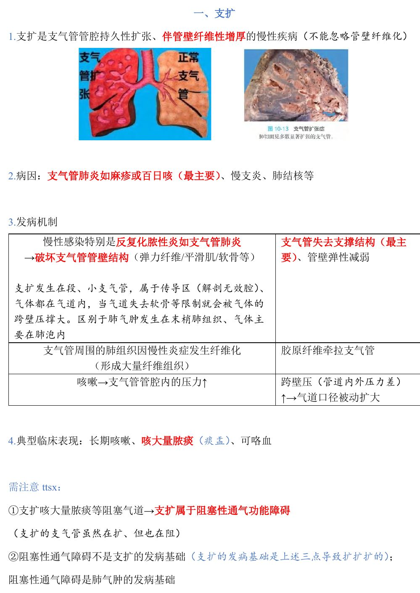
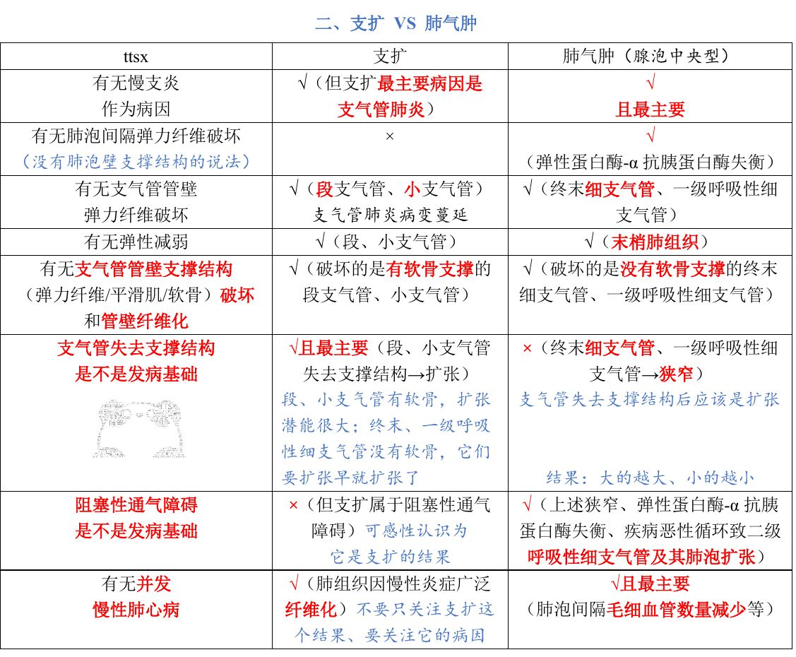
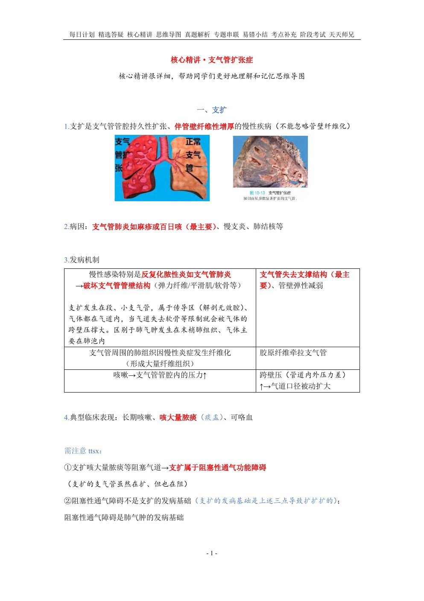
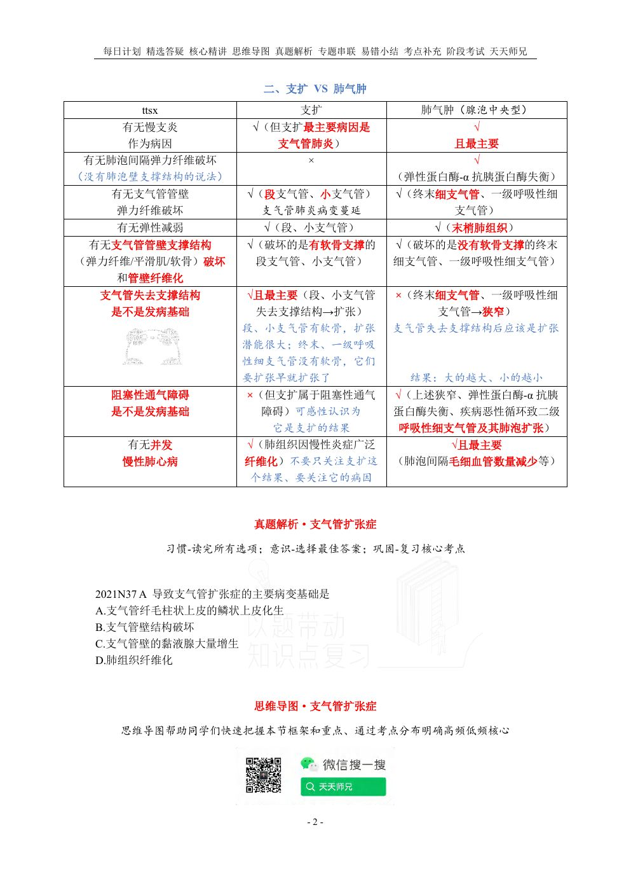

A
·
我的考研资料库
← 总目录
每日句子 ↗
考研西综 · 病理学 · 学成选择题
第12课｜支气管扩张症
对应讲义：
P1–2
｜ 共
14
题 ｜ 建议约
10
分钟
← 总目录
展开全部答案
收起全部
重做
已答 0/14 · 正确 0
用法：A型题点选项即判；X型题先多选、再点【判卷】；答完自动展开解析。刷完本课再过一遍底部【本课速记卡】，效果最好。
一、支气管扩张症
8 题
A型·单选
Q1
P1 · 支扩
支气管扩张症的定义是
A. 支气管管腔持久性扩张，伴管壁纤维性增厚
B. 末梢肺组织含气过多
C. 支气管管腔一过性痉挛
D. 支气管管腔持久性扩张，管壁变薄
答案与解析
答案：
A
管腔持久性扩张＋管壁纤维性增厚——不能忽略管壁纤维化。
📖 讲义定位：P1 · 支扩

📷 讲义原图 · P1 · 支扩
A型·单选
Q2
P1 · 支扩
支气管扩张症最主要的病因是
A. 支气管哮喘
B. 肺硅沉着病
C. 肺结核
D. 支气管肺炎（如麻疹、百日咳）
答案与解析
答案：
D
最主要病因：支气管肺炎（如麻疹或百日咳）；也可见于慢支炎、肺结核等。
📖 讲义定位：P1 · 支扩
📷 讲义原图 · P1 · 支扩
A型·单选
Q3
P1 · 支扩机制
支气管扩张症发病的最主要机制是
A. 胶原纤维过度沉积使管腔变窄
B. 慢性感染破坏管壁结构（弹力纤维、平滑肌、软骨）→支气管失去支撑结构
C. 肺泡间隔弹力纤维破坏
D. 细支气管不完全阻塞
答案与解析
答案：
B
慢性感染（反复化脓性炎）破坏管壁结构→失去支撑结构（最主要）＋管壁弹性减弱；另有周围肺纤维化牵拉、咳嗽致跨壁压升高等机制。
📖 讲义定位：P1 · 支扩机制
📷 讲义原图 · P1 · 支扩机制
X型·多选
Q4
P1 · 支扩机制
支气管扩张症的发病机制包括
A. 咳嗽使管腔内压力升高（跨壁压增大）
B. 慢性感染破坏支气管管壁结构
C. 肺泡间隔弹力纤维破坏
D. 支气管周围肺组织纤维化，胶原纤维牵拉支气管
判卷
答案与解析
答案：
ABD
C 错：肺泡间隔弹力纤维破坏是肺气肿的机制。支扩三机制：管壁结构破坏（失去支撑）、周围纤维化牵拉、跨壁压升高。
📖 讲义定位：P1 · 支扩机制
📷 讲义原图 · P1 · 支扩机制
A型·单选
Q5
P1 · 支扩
支气管扩张症病变发生的部位是
A. 胸膜下肺组织
B. 肺泡管和肺泡囊
C. 段、小支气管（传导区）
D. 末梢肺组织（肺腺泡）
答案与解析
答案：
C
支扩发生在段、小支气管（属于传导区/解剖无效腔，气体在气道内，失去软骨等限制后被气体跨壁压撑大）；区别于肺气肿发生在末梢肺组织。
📖 讲义定位：P1 · 支扩
📷 讲义原图 · P1 · 支扩
A型·单选
Q6
P1 · 支扩
支气管扩张症的典型临床表现是
A. 呼气性呼吸困难为主
B. 干咳、无痰
C. 胸痛、呼吸困难
D. 长期咳嗽、咳大量脓痰，可咯血
答案与解析
答案：
D
长期咳嗽、咳大量脓痰（『痰盂』）、可咯血。
📖 讲义定位：P1 · 支扩
📷 讲义原图 · P1 · 支扩
A型·单选
Q7
P1 · 注意
关于支气管扩张症的通气功能，正确的是
A. 通气功能完全正常
B. 阻塞性通气障碍是其发病基础
C. 属于阻塞性通气功能障碍（但不是其发病基础）
D. 属于限制性通气功能障碍
答案与解析
答案：
C
支扩咳大量脓痰等阻塞气道→属于阻塞性通气功能障碍；但阻塞性通气障碍不是支扩的发病基础（发病基础是管壁结构破坏失支撑），而是肺气肿的发病基础。
📖 讲义定位：P1 · 注意
📷 讲义原图 · P1 · 注意
A型·单选
Q8
P1 · 支扩机制
导致支气管扩张症的主要病变基础是
A. 支气管壁结构破坏
B. 肺组织纤维化
C. 支气管壁的黏液腺大量增生
D. 支气管纤毛柱状上皮的鳞状上皮化生
答案与解析
答案：
A
主要病变基础＝支气管壁结构破坏（弹力纤维、平滑肌、软骨破坏→失去支撑结构）。
📖 讲义定位：P1 · 支扩机制
📷 讲义原图 · P1 · 支扩机制
二、支扩 VS 肺气肿
6 题
A型·单选
Q9
P2 · 对比
在支扩与肺气肿的对比中，『支气管失去支撑结构后』的结局是
A. 所有气道均扩张
B. 段、小支气管扩张（有软骨、扩张潜能大）；终末细支气管、一级呼吸性细支气管则为狭窄
C. 两者均无变化
D. 所有气道均狭窄
答案与解析
答案：
B
『大的越大、小的越小』：段/小支气管有软骨支撑，失支撑后扩张（支扩）；终末细支气管、一级呼吸性细支气管没有软骨，本来要扩张早就扩张了，它们以狭窄为主（肺气肿方向）。
📖 讲义定位：P2 · 对比

📷 讲义原图 · P2 · 对比
X型·多选
Q10
P2 · 对比
关于支扩与肺气肿的比较，下列叙述正确的有
A. 支扩和肺气肿均可以慢支炎为病因
B. 肺泡间隔弹力纤维破坏见于肺气肿
C. 阻塞性通气障碍是支扩的发病基础
D. 支气管管壁弹力纤维破坏见于支扩
判卷
答案与解析
答案：
ABD
C 错：阻塞性通气障碍不是支扩的发病基础（支扩属于阻塞性通气功能障碍，但发病基础是管壁结构破坏失支撑）；阻塞性通气障碍是肺气肿的发病基础。
📖 讲义定位：P2 · 对比
📷 讲义原图 · P2 · 对比
配伍题 · 共用选项，每题选一个
A. 支气管扩张症
B. 肺气肿（腺泡中央型）
C. 两者均有
D. 两者均无
Q11
P2 · 对比
失去支气管支撑结构是发病基础（最主要机制）
A
B
C
D
答案与解析
答案：
A
支扩：管壁结构破坏→失去支撑结构是最主要的发病基础。
📖 讲义定位：P2 · 对比
Q12
P2 · 对比
肺泡间隔弹力纤维破坏
A
B
C
D
答案与解析
答案：
B
肺泡间隔弹力纤维破坏（弹性蛋白酶-α1 抗胰蛋白酶失衡）见于肺气肿。
📖 讲义定位：P2 · 对比
Q13
P2 · 对比
阻塞性通气障碍是发病基础
A
B
C
D
答案与解析
答案：
B
阻塞性通气障碍是肺气肿的发病基础；支扩虽属阻塞性通气功能障碍，但这不是其发病基础。
📖 讲义定位：P2 · 对比
Q14
P2 · 对比
可并发慢性肺心病
A
B
C
D
答案与解析
答案：
C
两者均可并发慢性肺心病（肺组织广泛纤维化/毛细血管减少）。
📖 讲义定位：P2 · 对比
📷 讲义原图
本课速记卡
支气管扩张症
定义：支气管管腔持久性扩张＋管壁纤维性增厚
最主要病因：支气管肺炎（麻疹/百日咳）；也见慢支炎、肺结核
机制：①慢性化脓性炎破坏管壁结构（弹力纤维/平滑肌/软骨）→失去支撑（最主要）②周围肺纤维化→胶原牵拉 ③咳嗽→跨壁压↑
部位：段、小支气管（传导区）；临床：长期咳嗽、大量脓痰、咯血
属阻塞性通气功能障碍（但非发病基础）
支扩 VS 肺气肿（对比要点）
项目
支扩
肺气肿（腺泡中央型）
慢支炎作病因
√（但最主要为支气管肺炎）
√且最主要
肺泡间隔弹力纤维破坏
×
√
管壁弹力纤维破坏
√（段、小支气管）
√（终末、一级呼吸性细支气管）
失支撑结构＝发病基础
√且最主要
×（失去支撑以狭窄为主）
阻塞性通气障碍
属于其表现、非发病基础
发病基础
并发慢性肺心病
√
√且最主要
📚 网站题库（导入）
1 组 · 1 题
🔽 点击展开：从「西综题库」网站导入的 1 组题（1 题，含答案）
说明：本部分为外部题库导入（来源：「西综题库」网站 · 病理学），题干、选项与答案保留原样；标注「教师补充」的答案未经讲义逐项复核。做题方式：点字母选择（多选后点【判卷】；答案可点开「答案与出处」查看）。
支气管扩张症的病理变化有
多项选择
教师补充
A
支气管管壁明显增厚
B
支气管黏膜上皮增生伴鳞化
C
扩张的支气管管腔内见血性渗出物
D
支气管管壁结构被不同程度破坏
网站题
W1
第12讲 · 第1页
支气管扩张症的病理变化有(多选)
A
B
C
D
判卷
答案与出处
答案：
ABCD
📖 第12讲 · 第1页

📷 讲义原图 · 第12讲 · 第1页
📄
讲义
📄 本课讲义（共 2 页）
原生打开 ↗
✕ 关闭
